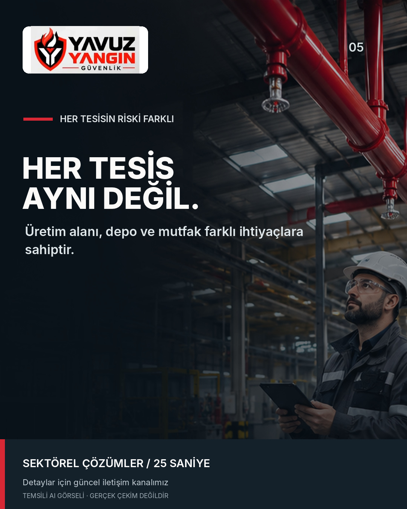

Yanlış söndürücü ile müdahale etmek alevi söndürmez, aksine patlamaya sebep olabilir! Elektrik yangınına su dökmek elektrik çarpmasına, mutfak yağına toz sıkmak yangının sıçramasına yol açar.
1. Yangın Sınıfları ve Özellikleri
- A Sınıfı (Katı): Ahşap, kağıt, tekstil, plastik. Su, köpük ve ABC KKT ile söndürülür.
- B Sınıfı (Sıvı): Benzin, tiner, boya, solvent. Köpük, CO2 ve KKT ile söndürülür (Su ASLA sıkılmaz).
- C Sınıfı (Gaz): LPG, doğalgaz, metan. Önce gaz kesilir, sonra KKT ile müdahale edilir.
- D Sınıfı (Metal): Magnezyum, alüminyum, titanyum, lityum. Yalnızca özel D tozu kullanılır.
- F Sınıfı (Mutfak Yağları): Bitkisel kızgın yağlar. Yalnızca F sınıfı sıvı kimyasal nozullarla söndürülür.
Tesisinizin Yangın Güvenliğini Birlikte Denetleyelim
TSE HYB onaylı uzman teknik kadromuz işletmenize gelerek tüm tüpleri ve sistemleri yerinde incelesin.